Un rouleau de printemps pendant l’hiver
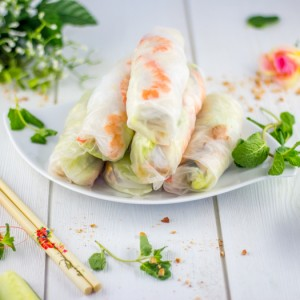
Si vous avez envie d’un peu de légèreté je pense que cette recette va surement vous intéresser! Certes on est en hiver mais dernièrement j’avais très envie d’un petit rouleau de printemps!
Je sais pas vous, mais moi ces derniers temps entre New York (car oui nous sommes partis à NY), les fêtes de fin d’année suivies de l’épiphanie, j’ai carburé en excès (mouais en fait je fais des excès plus ou moins toute l’année mais chuuut)! Je pense que dernièrement j’ai voulu me donner bonne conscience et préparer des plats sains, un peu plus lights que d’habitude histoire que mon estomac puisse se mettre en pause un court moment! Ceux qui me suivent sur mon compte Instagram ont dû voir récemment la photo de mes rouleaux de printemps!! Apparemment je ne suis pas la seule à avoir envie d’autre chose et de retrouver d’autres saveurs pour changer un peu de tout ce que l’on a pu manger (s’empiffrer) pendant les fêtes. Mon chéri et moi même sommes des adeptes de cuisine asiatique alors quoi de mieux que de se préparer un bon petit rouleau de printemps aux crevettes, au poulet et aux bons petits légumes! Le « problème » c’est la sauce car au final elle est quand même plutôt calorique (surtout quand on rajoute des cacahuètes dedans comme moi^^) mais bon il faut savoir la « doser » pour ne pas en abuser!
Originaire du Vietnam, les rouleaux de printemps se mangent généralement en entrée et quelquefois en apéritif. Frais et légers ils sont donc parfaits si vous aussi vous souhaitez de temps en temps faire une « pause » et manger léger!
Je vous laisse découvrir la recette et j’espère qu’elle vous plaira!!
Ingrédients
- Poulet - 100g
- Crevettes - 6
- Vermicelles de riz - 70g
- Carotte - 1
- Concombre - 1/2
- Haricot Mungo (germes de soja) - 80g
- Sauce soja - 1 Càs
- Menthe
- Laitue
- Feuille de riz - 6
Instructions
- Couper le poulet en fines lamelles et le laisser mariner dans de la sauce soja pendant une bonne heure
- Préparer vos crevettes : Décortiquer les crevettes puis coupez les en deux dans le sens de la longueur. Enlever ensuite le long boyau noir et nettoyez les à l'eau claire.
- Préparer les légumes : Couper les carottes en fines juliennes et le concombre en fine lamelles Nettoyer également les haricots mungo
- Cuire le poulet à la poêle et réserver
- Une fois que tous les ingrédients sont préparés, cuire les vermicelles de riz selon les indications du paquet (vous pouvez prendre aussi des vermicelles de soja) Attention à ne pas les casser en les mettant dans la casserole
- En fin de cuisson les passer sous l'eau froide pour stopper la cuisson. Bien les égoutter
- Humidifier votre feuille de riz en vous aidant d'un saladier rempli d'eau tiède
- Déposer votre feuille de riz sur un torchon propre
- Déposer un peu de laitue
- Du poulet sur la laitue
- Un peu de légumes
- Des feuilles de menthe
- Des germes de soja
- Les crevettes un peu en avant de la farce
- Finir avec des vermicelles de riz
- Plier les rouleaux de printemps comme sur le schéma, c'est à dire rabattre les bords de la feuille de riz sur la farce ainsi que le bord juste devant vous et enrouler le rouleau assez serré pour obtenir un beau rouleau de printemps maison !
- Servir avec une sauce aux cacahuètes c'est un régal!!
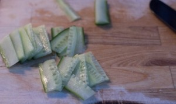
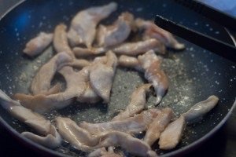
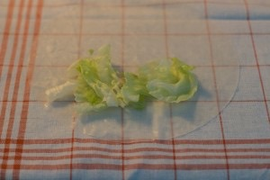
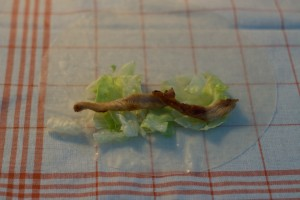
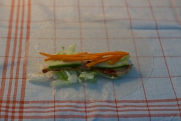
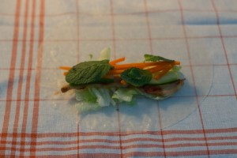
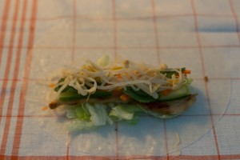
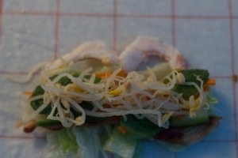
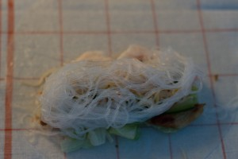
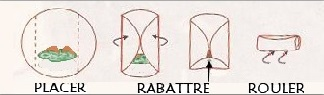
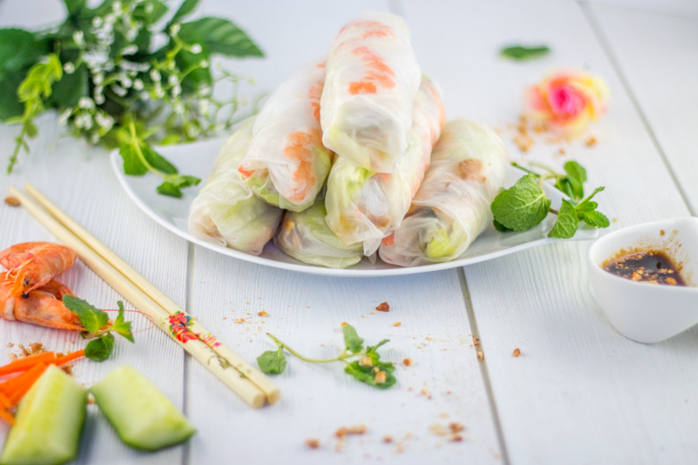
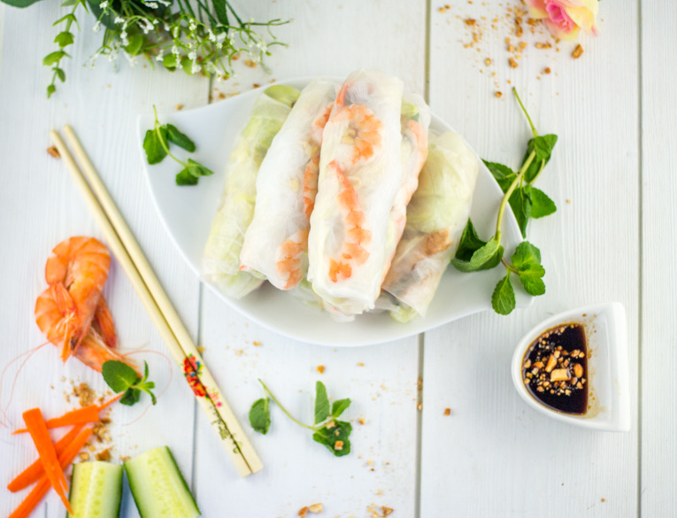
Les tips de la communauté
Recette bien reçue avec un intérêt pour le côté frais et léger. Les commentaires valorisent les photos et encouragent à tester, mais notent que le pliage requiert de la pratique.
Astuces
- Les rouleaux de printemps maison sont faciles à faire une fois le coup de main acquis
- Le pliage est l'étape clé qui nécessite de la pratique
- Les rouleaux peuvent être préparés la veille avec les ingrédients appropriés
- Utiliser un film alimentaire pour conserver au frais
Variantes suggérées
- Ajouter des cacahuètes natures écrasées dans les rouleaux
- Accompagner avec une sauce aux cacahuètes maison
- Tester avec différentes garnitures de légumes de saison
Ajustements signalés
- N'oublier pas les feuilles de riz dans la liste des ingrédients
- Les rouleaux demandent du temps pour le pliage mais c'est à la portée de tous